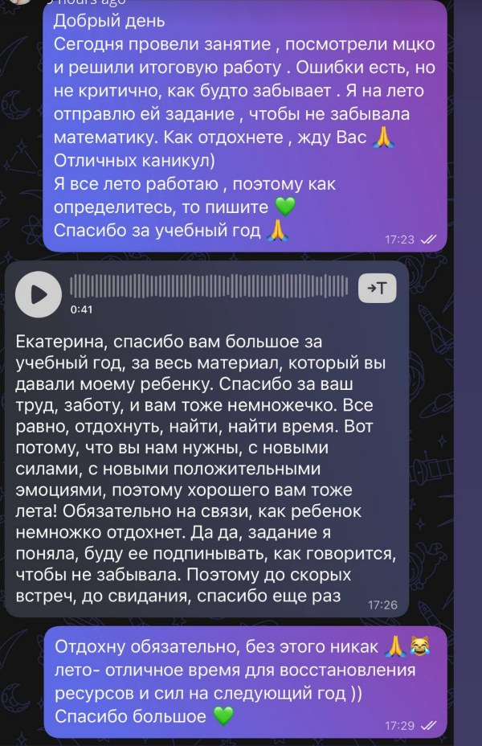
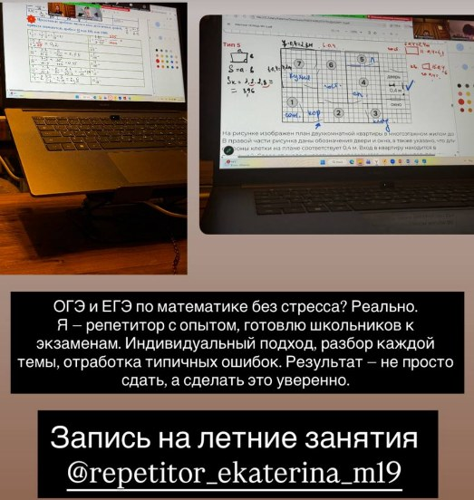

Пробелы в базе
Дроби, проценты, уравнения и геометрия мешают новым темам.
7-11 классы · ОГЭ · ЕГЭ · профиль и база
Я Екатерина Песня, учитель математики. Помогаю школьникам разобраться в темах, закрыть пробелы и идти на экзамен без паники.
Подход
На занятиях Екатерина разбирает тему на понятные шаги, показывает, как оформлять решение, и отдельно возвращается к ошибкам, которые повторяются.
Смотрим пробник, контрольную или текущую тему
Выделяем слабые задания и причину ошибки
Разбираем похожие задачи до уверенного решения
Закрепляем домашней работой и короткой обратной связью
Когда особенно полезно
Дроби, проценты, уравнения и геометрия мешают новым темам.
Разбираем не только балл, но и причину: знание, оформление или время.
Можно объяснить ту же тему другим языком и в удобном темпе.
Работаем со стратегией экзамена и заданиями, где чаще теряют баллы.
Составляем реалистичный план: проблемные темы в приоритете.
Занятия
Если задание не получается, Екатерина не просто даёт формулу, а ищет объяснение, после которого ученик видит ход решения.
Проценты, средняя скорость, планиметрия, производная, вероятность: в канале много разборов тем, где часто теряют баллы.
После важных работ понятно, что разобрали, где ошибки и что делать дальше.
Задача - не напугать экзаменом, а собрать план и постепенно вернуть уверенность.
Форматы
В постах Екатерина отдельно пишет про группы 3-5 человек, индивидуальные занятия, онлайн и офлайн формат. Точный вариант лучше подобрать после короткого сообщения.
Когда есть пробелы, мало времени или нужна личная стратегия под цель.
3-5 учеников, поддержка между занятиями, здоровая учебная динамика.
Раз в неделю, чтобы не забыть материал и закрыть пробелы до нового года.
Структура экзамена, база, профиль, оформление второй части и пробники.
Кейсы и отзывы
Взял только публичные и безопасные фрагменты из Telegram-экспорта: без имён учеников, телефонов и личных деталей.
В посте Екатерина отмечает, что в тот год ученики, которые занимались с ней как с репетитором, сдали ОГЭ по математике без троек.
Источник: Telegram-пост о результатах ОГЭБыл страх решать задачи, спешка и неуверенность. После занятий появились спокойное решение, понятный ход мысли и более сильный итоговый результат.
Источник: пост с хештегом #Кейсы_ПесниУченик отдельно отмечает терпеливые объяснения, гибкий формат, поддержку и рост итогового результата по ОГЭ и ЕГЭ.
Источник: отзыв от 10.06.2025Родитель благодарит за материалы, внимание к ребёнку и работу в течение года. На сайте оставлена только обезличенная выжимка.
Источник: опубликованная сторис ЕкатериныВ канале есть отдельные посты про МЦКО, подготовку к диагностике и результаты учеников 7 и 10 классов.
Источник: Telegram-посты про МЦКОВ одном из постов Екатерина пишет про уровень “эксперт”, 4 повышения квалификации и 2 сданных экзамена за год.
Источник: Telegram-пост о повышении квалификации
Фрагмент отзыва из сторис
Фрагмент занятия и онлайн-доскиБыстрые ответы
Да. Сначала разбираем, где именно просадка: тема, оформление, скорость или тревога. Потом собираем план.
Да. В материалах Екатерины есть профиль, база, оформление второй части и разборы сложных тем.
Зависит от цели. Мини-группа даёт общение и темп, индивидуально лучше при больших пробелах и сжатых сроках.
Да, если нужно не потерять форму, закрыть пробелы или спокойно подготовиться к следующему учебному году.
Запись
Достаточно указать класс, экзамен или школьную тему, формат и что сейчас вызывает трудности.